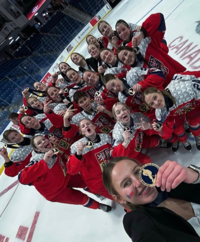

Napsala: Gita Hadašová
Datum: 5.5.2026
Bylo to jedny Vánoce, když jsem dostala pod stromeček brusle. Šla jsem je hned vyzkoušet na led a strašně mě to chytlo, tak jsem začala trénovat a už jsem u toho zůstala.
Nebylo to úplně jednoduché. Bylo za tím hodně práce, nekonečno tréninků a taky podpora od rodiny a trenérů. Postupně jsem se zlepšovala, dostávala se do lepších týmů a pak přišla obrovská šance dostat se do reprezentace.
Snažím se to nějak vybalancovat, i když přiznávám, že to není vždycky lehké. Učím se hlavně po tréninku nebo na cestách, když je zrovna volá chvíle a aspoň trocha času. Člověk si na to, ale postupně zvykne.
Hlavní rozdíl vnímám v tom, že mužský hokej je mnohem více kontaktní. U ženského hokeje je to spíš o bruslení a taktice, ale jinak to samozřejmě vidím jako pořád stejný sport.
Atmosféra byla výjimečná. Opravdu hodně odlišná od běžných zápasů. Bylo cítit velké soustředění a zároveň i nervozita, protože každý zápas měl obrovskou váhu. Zároveň, ale panovala skvělá energie v týmu, která nás pomáhala všechny držet pohromadě a zvládat tlak.
Je to celkově mnohem náročnější. Tréninky jsou intenzivnější, více a dopodrobna se řeší taktika, detaily hry a taky fyzická kondice. S tím taky roste větší tlak na výkon a výsledky.
Bylo to hodně vyčerpávající, jak fyzicky tak psychicky. Fyzicky kvůli vysokému tempu zápasů a příliš krátkému času na regeneraci. Psychicky pak kvůli stresu, zodpovědnosti a tlaku, který s reprezentací země souvisí.
Právě to, že jsem se dostala na mistrovství a mohla tam sbírat zkušenosti na vyšší úrovni. Velkou hodnotu pro mě má i to, že jsem se dokázala prosadit v týmu a být jeho platnou součástí.
Do budoucna bych se chtěla dále zlepšovat, posouvat se výkonnostně a dostat se na co nejvyšší úroveň to půjde. Mým cílem je hrát v zámoří na univerzitě. Chci tam získat nové zkušenosti a zároveň se dál rozvíjet jak po hokejové, tak i po osobní stránce.
Mým vzorem je kanadský útočník Connor McDavid a dva čeští útočníci Jakub Flek a David Pastrňák. Inspiruje mě jejich rychlost, výborná schopnost číst hru, pracovitost a šikovnost.
